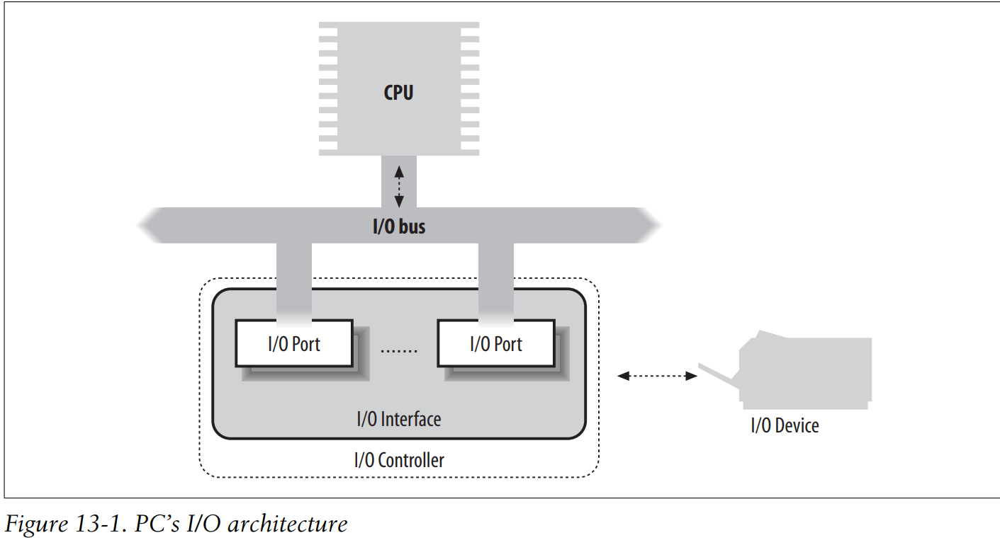
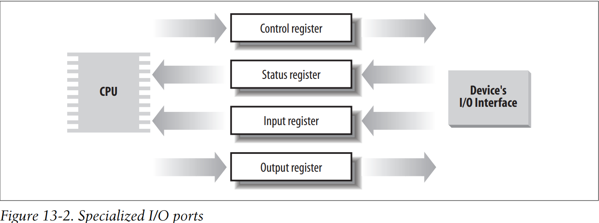
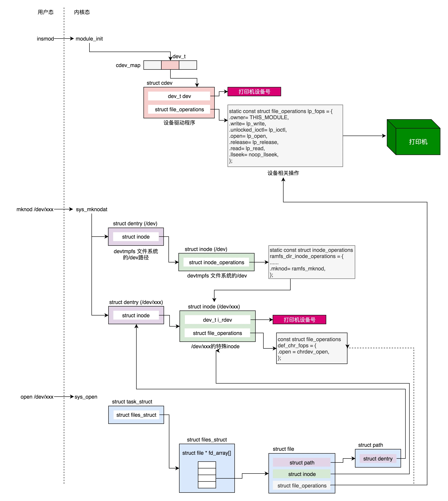

linux内核学习-九
前言
这部分会涉及到80x86的I/O体系，并简单涉及Linux的设备驱动程序模型
I/O体系结构
为了计算机正常工作，计算机主板上必须提供数据通路，让信息在连接到个人计算机的CPU、RAM和I/O设备之间流动。
上述的数据通路被称为总线，担当计算机内部主通信通道的作用
任何I/O设备有且仅能连接一条总线。CPU和I/O设备之间的数据通路通常被称为I/O总线。每个I/O设备依次连接到I/O总线上，这种连接包含3个元素的硬件组织层次：I/O端口、I/O接口和设备控制器，其构成如下所示

I/O端口
每个连接到I/O总线上的设备，都有自己的I/O地址集，通常被称为I/O端口。有四条专用的汇编指令，允许CPU对I/O端口进行读写，分别是in、ins、out和outs。在执行其中的一条命令时，CPU使用地址总线选择所请求的I/O端口，使用数据总线在CPU寄存器和I/O端口之间传送数据
I/O端口还可以被映射到物理地址空间，从而处理器和I/O设备之间的通信可以使用对内存直接进行操作的汇编指令(例如，mov、and、or等)
每个设备的I/O端口被组织成如下图所示的一组专用寄存器:
- CPU把发送给设备的命令写入设备控制寄存器(device control register)
- CPU从设备状态寄存器(device status register)中读出表示设备内部状态的值
- CPU从设备输入寄存器(device input register)中获取设备数据
- CPU把输出给设备的数据写入设备输出寄存器(device output register)

访问I/O端口
虽然访问I/O端口很简单，但是检测哪些I/O端口已经被分配给I/O设备就比较困难了。
Linux内核使用位于include/linux/ioport.h的struct resource来记录分配给每个硬件设备的I/O端口。该结构体的关键字段如下所示
| 类型 | 字段名称 | 描述 |
|---|---|---|
| const char * | name | 资源拥有者的描述 |
| unsigned long | start | 资源范围的开始 |
| unsigned long | end | 资源范围的结束 |
| unsigned long | flags | 各种标志 |
| struct resource * | parent | 指向资源树中的父亲 |
| struct resource * | sibling | 指向资源树中的兄弟 |
| struct resource * | child | 指向资源树中的第一个孩子 |
实际上，struct resource和其指针构成一棵树，而Linux内核就是通过该树结构管理I/O端口
I/O接口
I/O接口是处于一组I/O端口和对应的设备控制器之间的一种硬件电路。其将I/O端口的值转换为设备所需要的命令和数据；或检测设备的变化，并对设备状态寄存器进行更新，还可以通过一条IRQ线，将电路连接到APIC，从而使其代表相应的设备发起中断请求
设备控制器
稍微复杂一些的设备，可能需要设备控制器来驱动，其通常其下述两个作用
- 对从I/O接口接收到的高级命令进行解释，并通过向设备发送适当的电信号序列，强制设备执行特定的操作
- 对从设备接收到的电信号进行转换和适当的解释，并修改设备状态寄存器
设备驱动程序模型
Linux内核提供了诸多的数据结构和辅助函数，从而为系统中所有的总线、设备以及设备驱动程序提供了一个统一的视图，该架构被称为设备驱动程序模型
sysfs文件系统
sysfs文件系统是类似于proc的特殊文件系统，被安装在/sys目录。
sysfs文件系统的目标是展示设备驱动程序模型组件间的层次关系。该文件系统的相应高层目录是
- block
块设备，其独立于所连接的总线 - devices
所有被内核识别的硬件设备，按照连接他们的总线对其进行组织 - bus
系统中用于连接设备的总线 - drivers
在内核中注册的设备驱动程序 - class
系统中设备的类型，同一类可能包含由不同总线连接的设备，于是由不同的驱动程序驱动 - power
处理一些硬件设备电源状态的文件 - firmware
处理一些硬件设备的固件的文件
kobject
设备驱动程序模型的核心数据结构是一个普通的数据结构，即kobject，其与sysfs文件系统自然的绑定在一起——每个kobject对应于sysfs文件系统中的一个目录
Linux内核关于struct kobject的定义位于include/linux/kobject.h，其关键字段如下所示
| 类型 | 字段名称 | 描述 |
|---|---|---|
| const char * | name | 指向容器的字符串 |
| struct kref | kref | 容器的引用计数器 |
| struct list_head | entry | 用于kobject相关的链表结构 |
| struct kobject * | parent | 指向父kobject |
| struct kset * | kset | 指向包含的kset |
| const struct kobj_type * | ktype | 指向kobject的类型描述符 |
| struct kernfs_node * | sd | 指向与kobject相对应的sysfs文件目录结构 |
kset
实际上，kobject会被嵌入到kset对象中进行管理。通过kset数据结构，可将kobject组织成一棵层次树。kset是同类型kobject结构的一个集合体。Linux内核关于struct kset的定义位于struct kset，其关键字段如下所示
| 类型 | 字段名称 | 描述 |
|---|---|---|
| struct list_head | list | 用于kset相关的链表结构 |
| struct kobject | kobj | 嵌入的kobject |
| const struct kset_uevent_ops * | uevent_ops | 处理kobject结构的回调函数表 |
实际上，kobj字段是嵌入在kset结构中的kobject对象，而位于kset中的所有kobject的parent字段，都指向该嵌入的kobject结构
设备
设备驱动程序模型中的每个设备，是由一个device对象来描述的，Linux内核将其定义在include/linux/device.h。其关键字段如下所示
| 类型 | 字段名称 | 描述 |
|---|---|---|
| struct kobject | kobj | 内嵌的kobject结构 |
| struct device * | parent | 指向父设备 |
| struct bus_type * | bus | 指向所连接的总线信息 |
| struct device_driver * | driver | 指向控制设备驱动程序的指针 |
| void * | driver_data | 指向驱动程序私有数据的指针 |
| void * | platform_data | 指向遗留设备驱动程序的私有数据的指针 |
| struct dev_pm_info | power | 电源管理信息 |
| u64 * | dma_mask | 指向设备的DMA屏蔽字的指针 |
| u64 | coherent_dma_mask | 设备的一致性DMA的屏蔽字 |
| struct list_head | dma_pools | 聚集的DMA缓冲池链表的首部 |
| struct dma_coherent_mem * | dma_mem | 指向设备所使用的一致性DMA存储器描述符的指针 |
驱动程序
设备驱动程序模型中的每个驱动程序，都可由device_driver对象描述，Linux内核将其定义在include/linux/device/driver.h。其关键字段如下所示
| 类型 | 字段名称 | 描述 |
|---|---|---|
| const char * | name | 设备驱动程序的名称 |
| struct bus_type * | bus | 指向总线描述符的指针 |
| struct module * | owner | 标识实现设备驱动程序的模块 |
| int ()(struct device ) | probe | 探测设备的方法 |
| int ()(struct device ) | remove | 移走设备时的方法 |
| void ()(struct device ) | shutdown | 设备断电时的所调用的方法 |
| int ()(struct device ) | suspend | 设备置于低功率状态时所调用的方法 |
| int ()(struct device ) | resume | 设备恢复正常状态时所调用的方法 |
总线
内核所支持的每一种总线类型，都由一个bus_type对象描述，Linux内核将其定义在include/linux/device/bus.h。其关键字段如下所示
| 类型 | 字段名称 | 描述 |
|---|---|---|
| const char * | name | 总线类型的名称 |
| const struct attribute_group ** | bus_groups | 包含总线属性和用于导出该属性到sysfs文件系统的方法 |
| const struct attribute_group ** | dev_groups | 包含设备属性和用于导出该属性到sysfs文件系统的方法 |
| const struct attribute_group ** | drv_groups | 包含设备驱动程序属性和用于导出该属性到sysfs文件系统的方法 |
| int ()(struct device dev, struct device_driver *drv) | match | 验证给定的设备驱动程序是否支持特定设备的方法 |
| int ()(struct device dev, pm_message_t state) | suspend | 保存硬件设备上下文状态，并改变设备供电状态的方法 |
| int ()(struct device dev) | resume | 改变设备供电状态并恢复硬件设备上下文的方法 |
类
设备驱动模型中的类，由struct class对象描述，Linux内核将其定义在include/linux/device/class.h。
实际上，所有的类对象都与/sys/class目录下的子目录一一对应，其用来抽象同一类的设备，从而向用户态应用程序导出一个标准的逻辑设备接口
设备文件
由于*nix操作系统都是基于文件概念的，则可以将I/O设备当做设备文件，从而将与传统文件交互的系统调用直接使用在设备文件上
一般来说，根据设备驱动程序的特性，设备文件可以简单划分为以下两种
- 块设备
块设备的数据可以被随机访问，并且可以认为访问随机数据块所需要的时间都很少，且大致相同
块设备的典型例子就是硬盘、软盘等 - 字符设备
字符设备的数据访问所需时间很大程度上依赖于数据在设备内的位置
字符设备的典型例子就是声卡、磁带等
设备文件是存放在文件系统中的真实文件，但是其struct inode索引节点并不包含指向磁盘上的数据块指针，而是包含硬件设备的一个标识符
传统上，设备标识符由设备文件的类型和一对参数组成。
第一个参数称为主设备号(major number)，其标识了设备的类型。通常具有相同主设备号和类型的所有设备由同一个设备驱动程序处理。
第二个参数称为次设备号(minor number)，其表示了主设备号相同的设备组中的一个特定设备。例如由相同的磁盘控制器管理的一组磁盘，其具有相同的主设备号，不同的次设备号。
动态分配设备号
每个设备驱动程序在注册阶段，都会指定其将要处理的设备号范围
在这种情况下，不能永久性地创建设备文件，设备文件只由在设备驱动程序初始化主设备号和次设备号后，才能被创建。
为此，设备驱动程序模型将主设备号和次设备号输出到/sys/class/dev目录下，从而将设备驱动使用的设备号统一输出到用户态空间中
动态创建设备文件
Linux内核提供了udev工具集，从而支持动态创建设备文件
当发现一个新的设备时，内核会产生一个新的进程来执行用户态shell脚本文件/sbin/hotplug，并将新设备上的有用信息作为环境变量，传递给shell脚本。
该脚本文件读取相关的配置文件信息后，完成新设备初始化所必需的任何操作，之后调用udev工具集扫描/sys/class/dev子目录，根据相关文件在/dev目录下创建适当的设备文件
设备文件的VFS处理
虽然设备文件也在系统的目录树中，但是其和普通文件或目录文件有根本的不同。
当进程访问普通文件时，其会通过文件系统，访问磁盘分区中的一些数据块；而当进程访问设备文件时，其直接驱动硬件设备即可
为此，Linux内核只需要在设备文件打开时，改变其缺省文件操作即可。把诸如struct inode或struct file等函数指针字段设置为与设备相关的函数即可

设备驱动程序
设备驱动程序是内核例程的集合，其使得硬件设备响应控制设备的编程接口，而该接口一般是一组规范的VFS函数集。
由于每个设备都有一个唯一的I/O控制器，因此就有唯一的命令和唯一的状态信息，所以大部分I/O设备都有自己的驱动程序
注册设备驱动程序
根据前面的分析，对设备文件发出的每个系统调用，最后都会转换为相应的设备驱动程序的相关函数调用。
为此，设备驱动程序必须注册自己。即初始化一个新的struct device_driver描述符，将其插入到设备驱动程序模型的数据结构中，并把它与对应的设备文件连接起来
注册设备驱动程序时，内核会寻找可能由该驱动程序处理，但还尚未获得支持的硬件设备。Linux内核会通过总线类型描述符struct bus_type的match方法，以及struct device_driver的probe方法来探测可被驱动程序处理的硬件设备。
初始化设备驱动程序
对设备驱动程序进行注册和初始化是两件完全不同的事情
设备驱动程序应当尽快被注册，以便用户态应用程序能通过相应的设备文件使用它
而设备驱动程序应当尽可能推迟初始化——因为初始化驱动程序意味着分配宝贵的系统资源，这些资源将对其他驱动程序不可用
初始化设备驱动程序，一般就是初始化IRQ、初始化DMA传送缓冲区的页框和DMA通道本身
监控I/O操作
I/O操作的持续时间通常是不可预知的。在任何情况下，启动I/O操作的设备驱动程序，都必须依靠一种监控技术，在I/O操作终止或超时时发出信号
在终止操作的情况下，设备驱动程序读取I/O接口状态寄存器的内容，从而确认I/O操作是否成功执行；在超时的情况下，驱动程序知道一定出了什么问题，因为完成操作所允许的最大时间间隔已经用完，但什么也没做。
一般监控I/O操作结束的两种可用技术分别称为轮询模式(polling mode)和中断模式(interrupt mode)
轮询模式
CPU会重复检查设备的状态寄存器，直到寄存器的值表明I/O操作已经完成为止。
中断模式
如果I/O控制器能够通过IRQ线发出I/O操作结束的信号，则中断模式才能被使用
Linux内核向I/O设备发出命令后，即挂起进程，直到接收到I/O控制器发出的中断信号，才重新开始运行
直接内存访问(DMA)
在最初的PC体系结构中，CPU是系统中唯一的总线主控器，即CPU是唯一可以驱动地址/数据总线的硬件设备
随着CPU频率快速提升，为了平衡I/O设备和CPU的速度，现在所有的PC都包含一个辅助的DMA电路，用来控制在RAM和I/O设备之间数据的传送
DMA一旦被CPU激活，即可自行传送数据；而当DMA数据传输结束后，DMA发出一个中断请求通知CPU
总线地址
DMA的每次数据传送需要一个内存缓冲区，其包含硬件设备要读出或写入的数据。一般而言，启动一次DMA之前，设备驱动程序必须确保DMA电路可以直接访问RAM内存单元
DMA在访问内存，是通过总线地址(bus address)，其是除CPU之外的硬件设备驱动数据总线时所用的存储器地址。之所以使用总线地址，是因为在DMA操作中，数据传送不需要CPU的参入，I/O设备和DMA电路直接驱动数据总线。
因此，当内核开始DMA操作时，必须把所涉及的内存缓冲区总线地址或写入DMA适当的I/O端口，或写入I/O设备适当的I/O端口
高速缓存的一致性
系统体系结构并没有在硬件级为硬件高速缓存与DMA电路之间提供一个一致性协议。
即如果设备驱动程序把一些数据填充到内存缓冲区中，然后立刻命令硬件设备利用DMA传送方式读取该数据。如果DMA访问这些物理RAM内存单元，而相应的硬件高速缓存行的内容还没有写入RAM中，则硬件设备所读取的就是内存缓冲区中的旧值
字符设备驱动程序
处理字符设备相对比较容易一些，因为通常并不需要复杂的缓冲策略，也不涉及磁盘高速缓存
struct cdev
Linux内核使用位于include/linux/cdev.h的struct cdev结构体，来描述字符设备驱动程序，而非通用的struct device_driver结构体。该结构体的关键字段如下所示
| 类型 | 字段名称 | 描述 |
|---|---|---|
| struct kobject | kobj | 内嵌的kobject |
| struct module * | owner | 指向实现驱动程序模块的指针 |
| struct file_operations * | ops | 指向设备驱动程序文件操作表的指针 |
| struct list_head | list | 与字符设备文件对应的索引节点链表的头 |
| dev_t | dev | 给设备驱动程序所分配的初始主设备号和次设备号 |
| unsigned int | count | 给设备驱动程序所分配的设备号范围的大小 |
struct kobj_map
为了维护所有的字符设备驱动，Linux内核使用位于drivers/base/map.c的struct kobj_map的映射结构来管理。该结构体的关键字段如下所示
| 类型 | 字段名称 | 描述 |
|---|---|---|
| struct probe *[255] | probes | 主设备号和相关字符设备驱动的映射表 |
| struct mutex * | lock | 互斥锁 |
其中，struct probe结构体的关键字段如下所示
| 类型 | 字段名称 | 描述 |
|---|---|---|
| struct probe * | next | 映射冲突链表中的下一个元素 |
| dev_t | dev | 设备号范围的初始设备号 |
| unsigned long | range | 设备号范围的大小 |
| struct module * | owner | 指向实现设备驱动程序模块的指针 |
| kobj_probe_t * | get | 探测谁拥有这个设备号范围 |
| void * | data | 指向设备号拥有者的私有数据 |
在这种情况下，struct probe结构体的data字段指向对应的cdev描述符
struct char_device_struct
前面通过映射表来维护所有的字符设备驱动，类似的，Linux内核使用位于fs/char_dev.c的struct char_device_struct映射表，来维护字符设备的设备号(虽然个人感觉struct kobj_map也可以实现)。该结构体的关键字段如下所示
| 类型 | 字段名称 | 描述 |
|---|---|---|
| struct char_device_struct * | next | 映射冲突链表中的下一个元素 |
| unsigne int | major | 设备号范围内的主设备号 |
| unsigned int | baseminor | 设备号返回内的初始次设备号 |
| int | minorct | 设备号范围的大小 |
| char [64] | name | 处理设备号范围内的设备驱动程序的名称 |
| struct cdev * | cdev | 指向字符设备驱动程序描述符 |